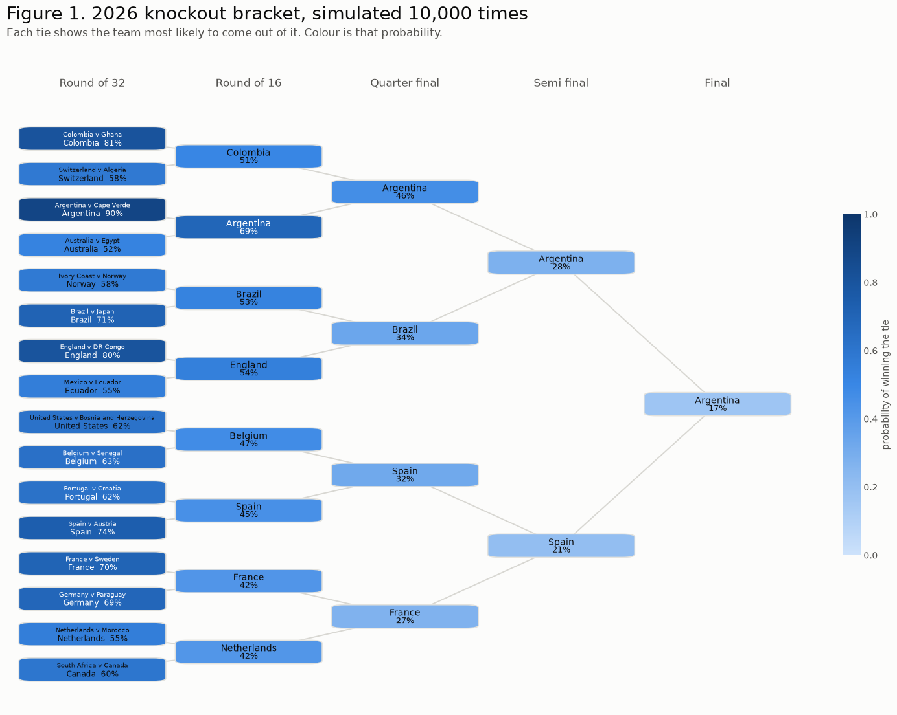
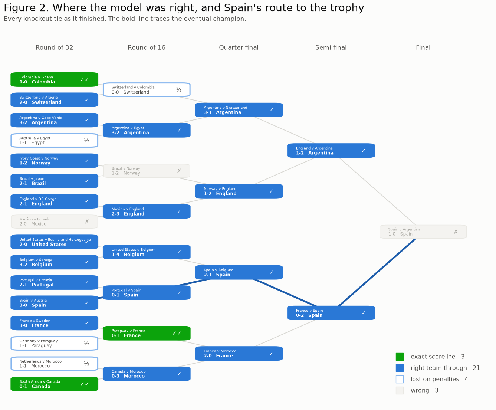

World Cup Predictor
A goals model built from twenty five years of international results, used to forecast the 2026 World Cup match by match.
The model
The model gives every team an attack and a defence strength, learned from past results, and uses them to work out the odds of any scoreline in a future match. Applied to every fixture in the World Cup and simulated across the bracket a few thousand times, it produces a forecast for the whole tournament. It is fixed before the 2026 World Cup starts, so it predicts the tournament rather than fitting it after the fact.
The strengths come from a Poisson model. Goals scored by each side are modelled as independent Poisson counts with a log link:
$$\log \lambda_{ij} = \mu + \alpha_i - \delta_j + h \cdot \mathbb{1}[\text{not neutral}]$$
Every team gets two numbers, an attack strength $\alpha$ and a defensive weakness $\delta$. For a given match the model pairs the home side's attack with the away side's defence, adds the intercept $\mu$ and a home advantage $h$ when the tie is not on neutral ground, and turns that into an expected goal count for each team. Goals are taken to arrive at that rate, which fixes the probability of every scoreline. The outer product of the two teams' distributions is a grid over all scorelines, and summing its lower triangle, diagonal and upper triangle gives the win, draw and loss probabilities.
The data
Results, scorers and shootouts all come from Mart Jürisoo's international football results dataset, which covers every recognised international since 1872. The one other input is FIFA's published table for slotting the eight best third-placed teams into the round of 32, which the whole-tournament simulation later needs.
We take international results from 2000 onwards, 23,933 matches, restricted to the 211 FIFA member associations. Membership is derived from the data rather than from a list: playing a qualifier or a World Cup is what membership means in practice. That drops regions, territories, unrecognised states and diaspora sides, none of which can reach a World Cup.
Every match carries the same weight, whether it is a friendly or a World Cup final. Qualifying is regional, so friendlies are the main occasion on which teams from different continents meet, and that cross-continental evidence is a lot of what the model relies on them for. We keep the match type label only to stratify the scores at the end.
Fitting and scoring
The data splits at the 2022 opening fixture. Everything before it trains the model, and everything from there to June 2026, some 3,513 matches, is held back to tune it. Tuning on that whole span rather than only the 64 World Cup fixtures inside it gives far more to work with. The 2026 tournament sits outside both.
The fit is a single call, and its two global coefficients read directly.
exp(intercept) is the goal rate for a fixture between two average teams on
neutral ground, and exp(home_adv) is the multiplicative home effect:
params = model.fit(df, model.CUTOFF_2022)
print(f"baseline goal rate {np.exp(params.intercept):.2f} per team per match")
print(f"home advantage x{np.exp(params.home_adv):.2f} when not on neutral ground")Calibration comes before any single score, since it catches systematic bias that a summary number hides: whether each outcome is predicted about as often as it actually happens.
| outcome | predicted | actual |
|---|---|---|
| home win | 0.471 | 0.471 |
| draw | 0.216 | 0.235 |
| away win | 0.313 | 0.294 |
The home-win probability matches its frequency exactly. Draws are where it slips: the model expects 21.6% of matches to finish level, where 23.5% actually do. That gap does not close under any of the tuning below, so it looks structural rather than like something more tuning could fix. We come back to it under Dixon Coles.
A single score needs a baseline to beat. The floor predicts the unconditional outcome rates for every fixture, knowing nothing about the teams, and failing to beat it would mean the fitted strengths add nothing at all. Brier and log loss are both proper scores and lower is better; accuracy is included for readability and is not proper.
| metric | model | base rates |
|---|---|---|
| brier | 0.5112 | 0.6365 |
| log loss | 0.8688 | 1.0549 |
| accuracy | 0.6009 | 0.4708 |
Two corrections
The fit above treats a result from 2000 as worth exactly as much as one from 2022, so each
team's coefficients carry two decades of squad turnover. Weighting each match by
0.5 ** (age / half_life), measured back from the cutoff, fades that out. It is
the only weighting in the fit, and the half life is the one number we sweep.
| metric | None | 3000 | 2000 | 1500 | 1000 | 700 | 500 | 350 |
|---|---|---|---|---|---|---|---|---|
| brier | 0.5112 | 0.5048 | 0.5034 | 0.5029 | 0.5033 | 0.5052 | 0.5086 | 0.5138 |
| log loss | 0.8688 | 0.8586 | 0.8563 | 0.8552 | 0.8558 | 0.8588 | 0.8647 | 0.8743 |
| accuracy | 0.6009 | 0.6035 | 0.6035 | 0.6043 | 0.6049 | 0.6015 | 0.5995 | 0.5929 |
The curve is shallow, but every decayed fit beats the undecayed one, and the Brier score is lowest at a half life of 1500 days:
best = min(half_lives[1:], key=lambda h: sweep[str(h)]["brier"]) tuned = model.fit(df, model.CUTOFF_2022, best)
The draw deficit survives the decay. Its cause is the independence assumption: real matches drift towards a level score in a way that two independent Poisson counts cannot express, and the effect concentrates in low scoring games. Dixon and Coles (1997) correct it by multiplying four cells of the scoreline grid by a factor built from a single parameter $\rho$:
$$\tau(0,0) = 1 - \lambda\mu\rho \qquad \tau(0,1) = 1 + \lambda\rho$$ $$\tau(1,0) = 1 + \mu\rho \qquad \tau(1,1) = 1 - \rho$$
Negative $\rho$ moves probability onto 0-0 and 1-1 and off 1-0 and 0-1, which is to say onto draws. The four factors are built so that total probability is unchanged, so nothing needs renormalising afterwards:
def tau(home_goals, away_goals, rate_home, rate_away, rho):
factor = np.ones(np.broadcast(home_goals, away_goals, rate_home, rate_away).shape)
factor = np.where((home_goals == 0) & (away_goals == 0), 1 - rate_home * rate_away * rho, factor)
factor = np.where((home_goals == 0) & (away_goals == 1), 1 + rate_home * rho, factor)
factor = np.where((home_goals == 1) & (away_goals == 0), 1 + rate_away * rho, factor)
factor = np.where((home_goals == 1) & (away_goals == 1), 1 - rho, factor)
return factorWe estimate $\rho$ in a second stage, by maximum likelihood on the training matches with the goal rates held fixed. That keeps the regression intact. A joint fit would mean hand writing the likelihood over 400 parameters, and the bias from holding the rates fixed is second order.
dc = model.fit(df, model.CUTOFF_2022, best, dixon_coles=True)
| outcome | poisson | dixon coles | actual |
|---|---|---|---|
| home win | 0.4651 | 0.4628 | 0.4708 |
| draw | 0.2196 | 0.2242 | 0.2348 |
| away win | 0.3153 | 0.3130 | 0.2943 |
The correction closes roughly a third of the draw gap. Its effect on the pooled holdout scores is small, a Brier of 0.5026 against 0.5029, because most matches are never close enough for the four adjusted cells to make a difference. What it mainly buys is a better-shaped forecast, not a better aggregate score.
One more split is worth making before the settings are fixed. The pooled score is dominated by friendlies and qualifiers, where lopsided fixtures make outcomes easy to call. Stratifying by match type separates skill on the target distribution from skill on the easy tail.
| metric | World Cup | FIFA | Friendly | OTHER |
|---|---|---|---|---|
| brier | 0.5922 | 0.4565 | 0.5317 | 0.5099 |
| log loss | 1.0192 | 0.7802 | 0.8993 | 0.8671 |
| accuracy | 0.5312 | 0.6451 | 0.5848 | 0.5952 |
World Cup matches are the hardest column by a clear margin, which is no surprise when a tournament of qualified teams has no easy fixtures to pad the score. That makes 0.5922 the yardstick for the 2026 result; the pooled 0.5026 is flattered by all the lopsided games.
The 2026 tournament
That settles the last of the choices. The final model uses a half life of 1500 days and the Dixon Coles correction. Refitting it with the cutoff moved to the 2026 opening fixture lets it see every match up to the day before the tournament, the whole holdout included. No 2026 result goes into the fit.
current = model.fit(df, model.CUTOFF_2026, best, dixon_coles=True)
This fit gives each side's rating going into the tournament, its attack plus defence on the log scale. The numbers mean little on their own, so the table is worth reading for the order of the teams and for how far each has moved since 2022. That movement is not just recent form either, as the 1500 day half life keeps the 2022 tournament in the picture.
| team | rank | was | moved | before | after | change |
|---|---|---|---|---|---|---|
| Argentina | 1 | 2 | 1 | 2.581 | 2.632 | 0.051 |
| Brazil | 2 | 1 | -1 | 3.044 | 2.591 | -0.453 |
| Spain | 3 | 3 | 0 | 2.557 | 2.589 | 0.032 |
| England | 4 | 4 | 0 | 2.381 | 2.429 | 0.048 |
| France | 5 | 6 | 1 | 2.330 | 2.336 | 0.006 |
| Portugal | 6 | 5 | -1 | 2.356 | 2.325 | -0.031 |
| Colombia | 7 | 11 | 4 | 2.160 | 2.220 | 0.060 |
| Netherlands | 8 | 7 | -1 | 2.247 | 2.174 | -0.073 |
| Belgium | 9 | 9 | 0 | 2.198 | 2.159 | -0.039 |
| Germany | 10 | 8 | -2 | 2.204 | 2.152 | -0.052 |
| Uruguay | 11 | 12 | 1 | 2.079 | 2.000 | -0.079 |
| Italy | 12 | 10 | -2 | 2.189 | 1.981 | -0.208 |
| Morocco | 13 | 27 | 14 | 1.571 | 1.962 | 0.392 |
| Denmark | 14 | 13 | -1 | 2.067 | 1.943 | -0.124 |
| Croatia | 15 | 14 | -1 | 1.857 | 1.897 | 0.040 |
| Switzerland | 16 | 15 | -1 | 1.835 | 1.858 | 0.023 |
| Ecuador | 17 | 18 | 1 | 1.698 | 1.827 | 0.129 |
| Japan | 18 | 29 | 11 | 1.537 | 1.798 | 0.261 |
| Norway | 19 | 30 | 11 | 1.479 | 1.753 | 0.274 |
| Austria | 20 | 33 | 13 | 1.436 | 1.703 | 0.267 |
The tournament itself is then scored on all 104 matches.
| metric | model | base rates | 2022 holdout |
|---|---|---|---|
| brier | 0.4829 | 0.6359 | 0.5922 |
| log loss | 0.8226 | 1.0538 | 1.0192 |
| accuracy | 0.6731 | 0.4712 | 0.5312 |
The result is better than the 2022 column on all three metrics, with 0.6731 accuracy against a 0.4712 floor. This is not evidence that the model improved. A single tournament of 104 matches is a small sample, and the 2026 knockout draw was less even than 2022, so much of the margin is the tournament rather than the model. What the number does show is that the model still beats its floor by a wide margin on data that went into no part of the tuning.
The matches it got wrong say more than the aggregate score. These are the ones it gave
the lowest probability to the outcome that actually happened, so a low given
means it was confident and wrong.
| date | home_team | away_team | score | p_home | p_draw | p_away | outcome | given |
|---|---|---|---|---|---|---|---|---|
| 2026-06-15 | Spain | Cape Verde | 0-0 | 0.852 | 0.112 | 0.036 | draw | 0.112 |
| 2026-06-20 | Ecuador | Curaçao | 0-0 | 0.839 | 0.124 | 0.037 | draw | 0.124 |
| 2026-07-05 | Brazil | Norway | 1-2 | 0.623 | 0.223 | 0.155 | away win | 0.155 |
| 2026-06-13 | Qatar | Switzerland | 1-1 | 0.087 | 0.162 | 0.752 | draw | 0.162 |
| 2026-06-23 | England | Ghana | 0-0 | 0.739 | 0.187 | 0.074 | draw | 0.187 |
| 2026-06-17 | Portugal | DR Congo | 1-1 | 0.710 | 0.201 | 0.089 | draw | 0.201 |
| 2026-06-21 | Uruguay | Cape Verde | 2-2 | 0.677 | 0.227 | 0.096 | draw | 0.227 |
| 2026-06-24 | South Africa | South Korea | 1-0 | 0.233 | 0.308 | 0.459 | home win | 0.233 |
| 2026-06-15 | Saudi Arabia | Uruguay | 1-1 | 0.108 | 0.245 | 0.647 | draw | 0.245 |
| 2026-06-29 | Germany | Paraguay | 1-1 | 0.575 | 0.245 | 0.180 | draw | 0.245 |
Eight of the ten are draws, and seven of those are a strong favourite held by a weaker side. This is the same draw deficit from earlier, this time landing on the matches the model was most confident about. Dixon Coles raises draw probabilities across the board, but these fixtures needed far more than the average lift, and one global $\rho$ has no way to give the confident games extra weight.
The knockout bracket
The knockout stage needs nothing more than a working match model. The 2026 bracket is held as a directed graph, one node per fixture and an edge from each tie to the one its winner feeds. A topological sort gives the order to play them in, so a tie is reached only once both its feeders have produced a winner, and the single sink is the final.
graph = model.bracket(model.knockout_ties(final_test)) odds = model.simulate_bracket(graph, current, runs=10_000)
The round of 32 pairings are the real ones, and the tree above them is recovered from who met whom in each later round. This is fixed tournament structure rather than hindsight about results, since the shape of the draw was set before the tournament began. Scorelines are sampled from the full grid rather than the win, draw and loss summary, and a level result is settled by a coin flip, since shootouts are close to unpredictable.

Argentina is the favourite at 17%, and no team clears a fifth. The field is flat because the model carries a 30% draw rate and settles shootouts on a coin flip, so a favourite's edge in any single tie is small and compounds slowly over five rounds.

The shading has four states rather than a plain right and wrong. A tie that finished level went to penalties, which the model treats as a coin flip by construction, so losing one is not a modelling error and is not counted as one. Setting those aside, the model called 24 of 27 non shootout ties: three with the exact scoreline, twenty one with the right team through, four lost on penalties and three wrong. One of the three wrong ones is the final itself.
Simulating the whole tournament
Everything above starts from the real round of 32, so every number in it is conditional on the group stage having gone as it did. Argentina's 17% is really the chance given that they topped their group and landed in that half of the draw. A team that went out in the groups has a probability of zero, which is correct after the fact but useless as a forecast.
Running the whole tournament from scratch drops that conditioning. We simulate all seventy two group matches, rank each group on points, then goal difference, then goals scored, take the eight best third-placed teams, and play the knockout out from there.
Three pieces of tournament structure have to be supplied, though none of them is a guess. The groups come straight from the fixtures: each team plays the three others in its group, so the match graph splits into twelve components of four. The round of 32 template is read off the real bracket. And which slot each group winner meets depends on which eight of the twelve groups the qualifying third-placed teams come from, so it is set by FIFA's published table, one of 495 possible mappings.
| team | from the group stage | from the real round of 32 |
|---|---|---|
| Brazil | 0.126 | 0.121 |
| Spain | 0.125 | 0.118 |
| Argentina | 0.112 | 0.166 |
| England | 0.089 | 0.093 |
| France | 0.073 | 0.071 |
| Portugal | 0.070 | 0.059 |
| Belgium | 0.051 | 0.054 |
| Colombia | 0.048 | 0.059 |
| Germany | 0.047 | 0.052 |
| Netherlands | 0.045 | 0.050 |
| Morocco | 0.027 | 0.024 |
| Uruguay | 0.025 | 0.000 |
Placing the two columns side by side shows what the conditioning was doing. Argentina falls from 16.6% to 11.2% once they have to play through the group stage rather than start past it, and Uruguay drops from 2.5% to zero, having gone out in the groups. Spain, who went on to win the whole thing, sat at 12.5% before a ball was kicked, a thousandth of a point behind Brazil.
The morning of the final
Everything above holds the model at the day before the tournament, which is what a fair forecast requires. This last section asks a different question: what would the model have said on 19 July, having seen the whole tournament except the match about to be played?
The cutoff moves to the final itself, so the fit sees all 103 preceding matches. Nothing else changes. Spain and Argentina each arrive with six more matches on their record than the frozen model had.
eve = model.fit(df, model.FINAL_2026, best, dixon_coles=True)
This fit has seen almost the whole tournament, so it is used only for the forecast below and its ratings are not comparable with the earlier ones. The final is still held out, so the prediction is out of sample, though one match is more a demonstration than a test.
| outcome | before the tournament | morning of the final |
|---|---|---|
| Spain win | 0.335 | 0.366 |
| draw | 0.306 | 0.304 |
| Argentina win | 0.359 | 0.330 |
Six matches of evidence flip the favourite. Before the tournament the model put Argentina ahead by 2.4 points; on the morning of the final it put Spain ahead by 3.6. Both forecasts are close to a three way split, which is what a final between the sides ranked first and third should produce.
| scoreline | before | final morning |
|---|---|---|
| 1-1 | 0.137 | 0.137 |
| 1-0 | 0.125 | 0.131 |
| 0-0 | 0.128 | 0.125 |
| 0-1 | 0.131 | 0.122 |
| 2-1 | 0.069 | 0.073 |
| 2-0 | 0.065 | 0.072 |
| 1-2 | 0.072 | 0.068 |
| 0-2 | 0.071 | 0.063 |
It finished 1-0 to Spain after extra time, the second most likely scoreline on the morning of the match at 13.1%, with the right result also at second favourite. On a match the fit never saw, that is a close call, though a single result carries little weight either way.